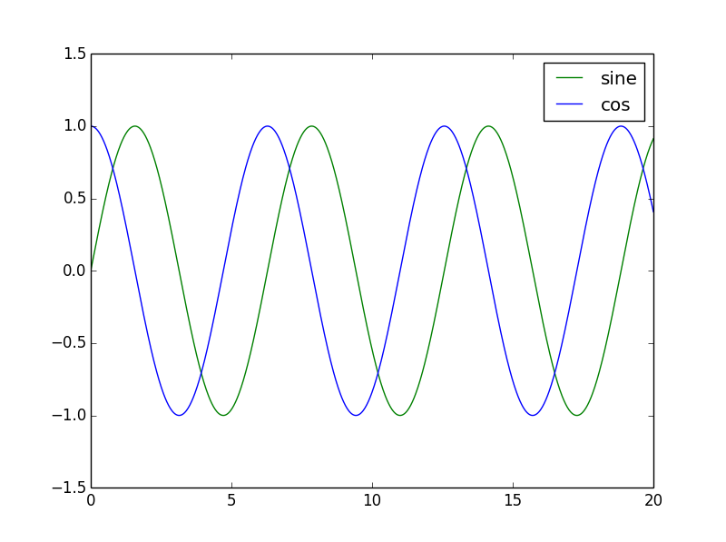
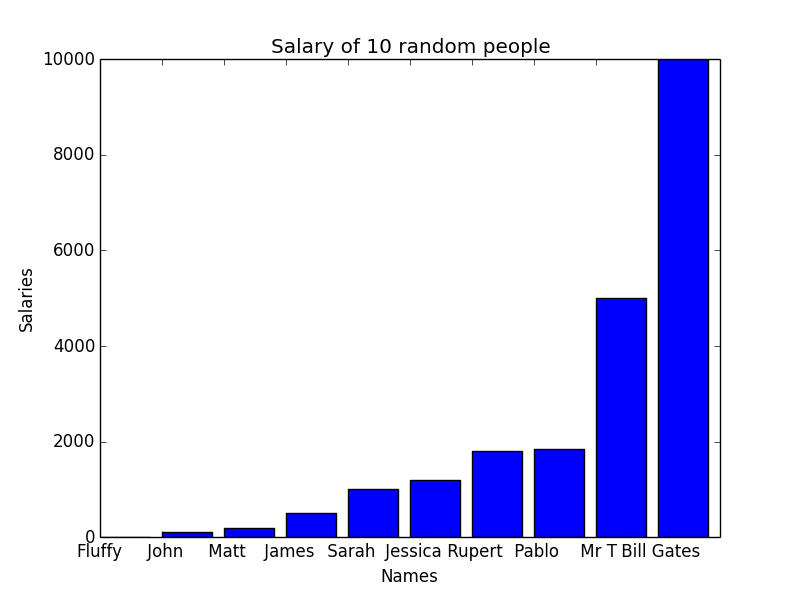
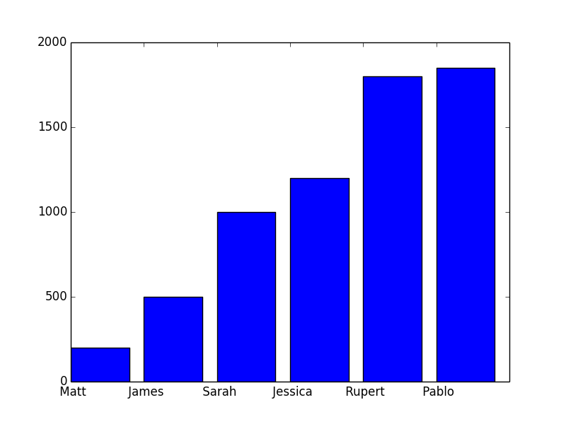

An introduction to Numpy and Matplotlib

Beginners Start Here:
Create a Word Counter in Python
An introduction to Numpy and Matplotlib
Introduction to Pandas with Practical Examples (New)
Main Book
Image and Video Processing in Python
Audio and Digital Signal Processing (DSP)
Machine Learning Section
Machine Learning with an Amazon like Recommendation Engine
List comprehensions
A very important part of Python is list comprehensions. They will come up again and again in any example you see online, so I thought I’d go over them separately. They are technically not a part of Numpy, but I’ll introduce them here, for reasons you will understand.
Move to the Plotting folder and open up list_comp.py.
#! /usr/bin/python
import numpy as np
The new thing here is we are importing numpy. We import it as np to save typing numpy each time. This is a common pattern in Python, though it is optional. You could just import numpy as it is.
x = [5,10,15,20,25]
# declare y as an empty list
y = []
We initiliase x with five values, and y as an empty list. What we want to do is fill y with the values of x divided by 5. The boring way, the way you’ll most likely use if you come from a C/C++ background is:
for counter in x:
y.append(counter / 5)
We loop over x, and for each value in x, divide it by 5 and add it to y.
print("\nOld fashioned way: x = {} y = {} \n".format(x, y))
We print the values. The only new thing here is the format() command. The values to be printed go inside {}, and the actual values go inside format(). Here are the results:
python .\list_comp.py
Old fashioned way: x = [5, 10, 15, 20, 25] y = [1.0, 2.0, 3.0, 4.0, 5.0]
But this method is not how it’s done in Python. There is a much easier way called list comprehensions.
List comprehensions are used when we are working with lists. One of the most common tasks is to take a list, do something with it, and create a new list. Because this is so common, an easy way to work with lists was created, rather than having to loop all the time.
The basic format of list comprehension is:
[ <do something> for value in list]
So for our example, where we want to divide x by 5:
z = [n/5 for n in x]
print("List Comprehensions: x = {} z = {} \n".format(x, z))
Result:
List Comprehensions: x = [5, 10, 15, 20, 25] z = [1.0, 2.0, 3.0, 4.0, 5.0]
We use a new variable z. Let’s break the list comprehension:
[for n in x]
This is our normal for loop. We loop over all the values in the list x.
[n/5 for n in x]
For each value n in x, divide n by 5. The square brackets ([]) will convert it to a list.
If you compare it with the previous example, you have replaced three lines with one. And this is a very simple example.
As a simple rule, any time you want to work with lists to form lists, use list comprehensions (unless a better way is available, as we’ll see!).
Why use a list in the 1st place?
But why can’t you just divide x by 5 directly? Let’s try it:
try:
a = x / 5
except:
print("No, you can't do that with regular Python lists\n")
No, you can't do that with regular Python lists
This is the Python try-except block. It tries to run your code and if it finds an exception, it hits the except block.
In this case, you can’t divide x by 5, so you will hit the exception.
Well, actually you can, as long as you use numpy arrays.
a = np.array(x)
b = a / 5
print("With Numpy: a = {} b = {} \n".format(a, b))
We convert our x to a numpy array with the np.array command. And now, we can directly divide a by 5.
Try out the code now and see the results. Play with it if you like.
A few final words. I’m not trying to say numpy arrays are better than list comprehensions. They are not, and in most cases, you would stick to list comprehensions. But numpy arrays give us so much power, we don’t need list comprehensions in many cases. I’ve shown you both ways, so you can choose the best one for yourself.
Plotting Sin and Cos waves
Okay. Let’s plot some sine and cosine ways. You all remember the formulas from school right? No? Then get out of my class.
Just kidding. You don’t need to remember formula’s. That’s what Python is for, right?
In this example, we are going to plot a few simple sin and cos graphs, getting an introduction to Python’s plotting library, Matplotlib.
#! /usr/bin/python
import numpy as np
import matplotlib.pyplot as plt
The new thing is: import matplotlib.pyplot as plt. We are importing it as plt to save typing. Another thing to note is: Matplotlib is a huge library. We are only importing the pyplot part of it. This is useful to save memory and speedup code. Otherwise you’ll be importing gigabytes of libraries everytime you want to print Hello World on the screen.
# Create x, evenly spaced between 0 to 20
x = np.linspace(0, 20, 1000)
Okay, let me remind you what I said earlier. Learning to use Python well means using a lot of libraries and functions. But you don’t have to remember them all. I still forget simple things like how to read files. Learning how to Google is one of the most important part of being a software engineer.
With that in mind, I’m using the numpy linspace function. And yes, I misspell it as linespace every single time.
Anyway, linspace generates evenly spread out values. In the example above, it will generate 1000 values between 0 and 20. Printing 1000 values will take a lot of space here, so let’s see what happens when we generate only 10 values:
In [2]: np.linspace(0,20,10)
Out[2]:
array([ 0. , 2.22222222, 4.44444444, 6.66666667,
8.88888889, 11.11111111, 13.33333333, 15.55555556,
17.77777778, 20. ])
As you can see, it has generated 10 values evenly spread between 0 to 20.
The numbers are floating point by default, which is good for us. Coming back to our code:
y1 = np.sin(x)
y2 = np.cos(x)
We take our x and calculate sin and cos values for it. Now to graph it.
# Plot the sin and cos functions
plt.plot(x , y1, "-g", label="sine")
plt.plot(x , y2, "-b", label="cos")
The first two values are the x and y axis values.
The third value is the color. “-g” for green, “-b” for blue. You can also have “-r” for red, and Google for more. Finally, we have the label, which will show up in the legend. Speaking of legends:
# The legend should be in the top right corner
plt.legend(loc="upper right")
We want the legend to be on the upper right corner, which in Matplotlib uses the simple English terms “upper right”. Can you guess what the instruction would be if you wanted it on lower left?
# Limit the y axis to -1.5 to 1.5
plt.ylim(-1.5, 1.5)
plt.show()
The first part is optional. The graph looked too squeezed, so I set the limits of the y axis to be between -1.5 and 1.5. Try to comment out the code and see what happens.
Finally, we show the graph.

Note the legend on the upper right corner, with the right labels.
Plotting Salary vs Names
In this exercise, we are going to read data from a file and plot it. I have two files: names.txt that contains names, and salaries.txt that contains, surprise, salaries. Let’s look at the files. I’m using the Linux cat command which just prints the file contents on the screen.
$ cat names.txt
Fluffy, John, Matt, James, Sarah, Jessica, Rupert, Pablo, Mr T, Bill Gates
$ cat salaries.txt
0, 100, 200, 500, 1000, 1200, 1800, 1850, 5000, 10000
The data in the two files is linked. So Fluffy has a salary of 0, John of 100 and so on.
I’m using two different files to show different ways of reading data.
#! /usr/bin/python
import numpy as np
import matplotlib.pyplot as plt
Nothing new here. Let’s go ahead.
salary = np.fromfile("salaries.txt", dtype=int, sep=",")
One of the main feature of numpy arrays, that makes them so much better than normal Python lists, is that it allows different types of number data types. Python lists are normally used for strings. While they can store numbers, they aren’t really optimised for numerical processing.
Numpy arrays are. You can store data as 8, 16 or 32 bits. You can choose to use integers or floats. Numpy handles all the conversion and processing internally.
In the line above, I’m setting dtype=int. This tells numpy that this is an integer. You could use int8 for 8bit, int16 for 16bit, uint16 for unsigned int 16 bit and so on. All the possible options are available in the documentation online. Just search for “numpy dtypes”.
I just use an int, as I don’t particularly care for this example. The last line in the instruction is sep=”,”, which tells Numpy that the data in the file is separated by commas. The data is in this format:
0, 100, 200, 500, 1000, 1200, 1800, 1850, 5000, 10000
It tells Numpy to separate the data in the array by commas. If the data was like this:
0 : 100 : 200: 500
you would use sep=”:”. Now, on to the next line.
names = np.genfromtxt("names.txt", dtype='str', delimiter=",")
Now we are reading names. The np.fromfile() function doesn’t work so well with text, so I’m using the genfromtxt function. It is similar to the previous function.
The dtype is string. delimiter is the same as sep in the previous example.
Now we need to plot the names vs the salaries. A small detail. You can’t really plot the names on the x axis, as the x axis has to be a number (actually you can, as you’ll see in the later chapter on Pandas. But I’ll show this method for now, as it stumps a lot of beginners). However, you can work around that.
The first thing you do is create a variable called x that will contain numbers for each of the names:
x = np.arange(len(names))
The numpy arange (take care, it’s arange not arrange) generates a list of numbers starting from 0.
In [3]: np.arange(5)
Out[3]: array([0, 1, 2, 3, 4])
In our code, x contains a list of numbers from 0 to the number of names.
plt.bar(x, salary)
So we plot x vs salary. We are using a bar graph here.
plt.xticks(x, names)
This line uses something called xticks. All it does it is replace the numbers in x with names. Because we can only plot against numbers, we had to use this round the way approach.
plt.ylabel("Salaries")
plt.xlabel("Names")
plt.title("Salary of 10 random people")
plt.show()
We set the x and y labels here, as well as add a title. We finally display the graph.

print(np.max(salary), np.min(salary), np.average(salary), np.median(salary))
10000 0 2165.0 1100.0
I have added this line just to show that numpy supports many functions like max and min (the maximum and minimum values in the array), average and median. If you are looking for a special mathematical function, it’s always worth Googling to find out if it already exists.
If you look at the graph above, you will realise there is a problem. The upper two values are so large, they are suppressing everything else. We can’t get clear results from the graph. And this gives me a chance to show you another cool feature of Python. Firing up the Python interpreter:
a = range(5)
a
Out[2]: [0, 1, 2, 3, 4]
We create a list a that contains values from 0 to 4. Now, you know you can see any one element of a list by doing something like a[2]. But you can also do:
a[:2]
Out[3]: [0, 1]
This says, starting at the 0th element, show all elements up to the second. Hence we get 0, 1.
We can also do:
a[2:]
Out[4]: [2, 3, 4]
Starting at the 2nd element, show all elements after that. Hence we get 2, 3, 4.
The general format is:
a[start value : end value]
Either start value or end value can be empty, in which case it will start at the beginning or go to the end, respectively. We can also give both values:
a[2:4]
Out[5]: [2, 3]
This says show elements between second and fourth position.
A few general rules:
a[0:2] --> Includes the 0th element, but not the 2nd element. Goes from 0 to 1.
a[2:5] --> Includes the 2nd element, but not the 5th. Goes from 2 to 4.
The rule is that the start element is included, while the last one is excluded.
Now here is the interesting thing:
a[:-1]
Out[6]: [0, 1, 2, 3]
What does -1 mean? Since the list starts at zero, -1 is the last element. -2 is the second last element, and so on. In the example above, we are saying starting from 0, show all elements up to the last. We can do it the other way too:
a[-1:]
Out[7]: [4]
This time we only get one element, as we started at the last one to begin with.
This trick is very neat to get rid of values at the beginning and end. Sometimes, the first few and last values maybe garbage, and you may want to get rid of them. This is how you remove the first and last element:
a[1: -1]
Out[10]: [1, 2, 3]
We will use this trick to get rid of the lower two and upper two values in our data. This is a normal technique in statistics to remove extreme values which may be interfering with the results.
salaries_new = salary[2:-2]
names_new = names[2:-2]
we remove lower two and top two values.
The rest of the code is the same as before:
x = range(len(names_new))
plt.plot(x, salaries_new)
plt.xticks(x, names_new)
plt.show()
print(np.max(salaries_new), np.min(salaries_new), np.average(salaries_new))
1850 200 1091.66666667

This time, the graph allows for better comparison.
And if you look at the average salary, it has gone down from 2165 to 1091.